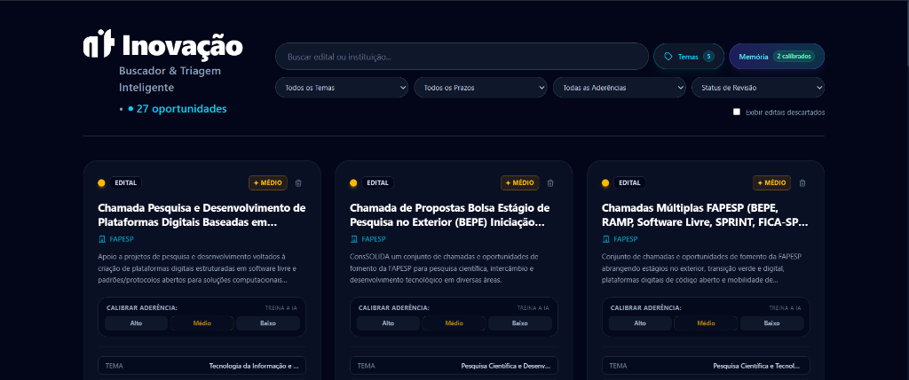

MVP corporativo — Em homologação
Buscador de Editais com IA
MVP do Metrô de São Paulo para monitorar oportunidades de inovação. O sistema reúne fontes públicas, estrutura editais e automatiza a busca e a triagem, deixando as oportunidades prioritárias prontas para revisão da equipe.
Participei da concepção, do planejamento, da arquitetura e da implementação, da coleta periódica à interface de análise e às notificações.
Tecnologias Python, FastAPI, React, PostgreSQL (Neon), Gemini API, n8n e Docker.

Decisões de engenharia
- Coleta e pré-filtragem. O n8n agenda a execução do backend, que integra a API pública da FINEP e coleta dados do site da FAPESP. Regras temáticas e filtros léxicos eliminam itens fora de escopo antes da inferência.
- Análise e persistência. A Gemini API retorna JSON estruturado com resumo, prazo, aderência e justificativa. O PostgreSQL preserva editais, classificações e revisões. O painel em React permite pesquisar, filtrar, consultar o texto original e manter temas de interesse.
- Revisão e notificação. Reclassificações acompanhadas de justificativa servem de exemplos de contexto em análises seguintes. Workflows enviam alertas por Teams e e-mail para oportunidades de alta aderência.